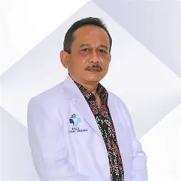
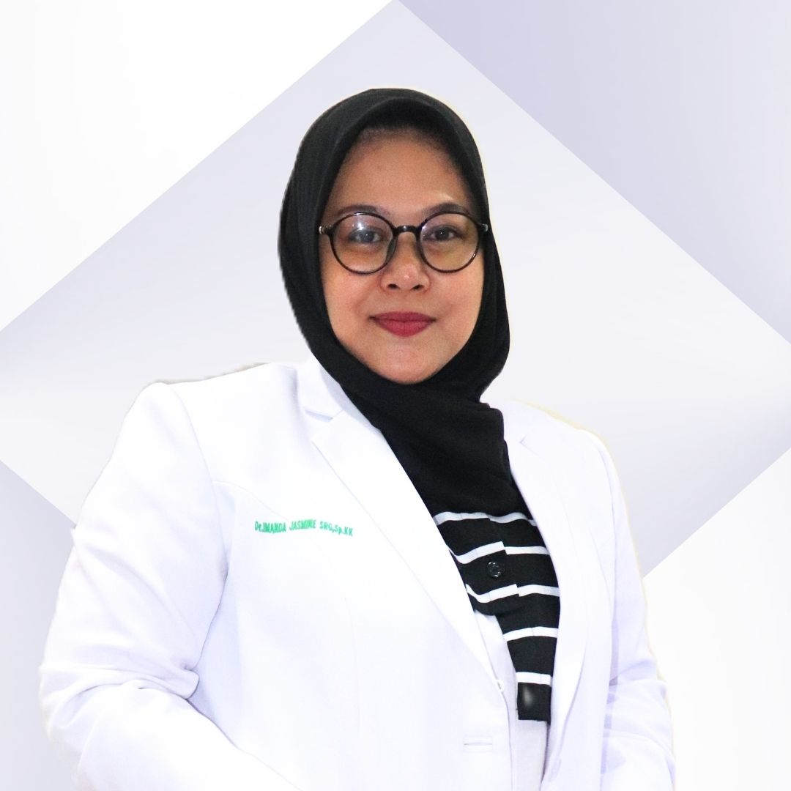
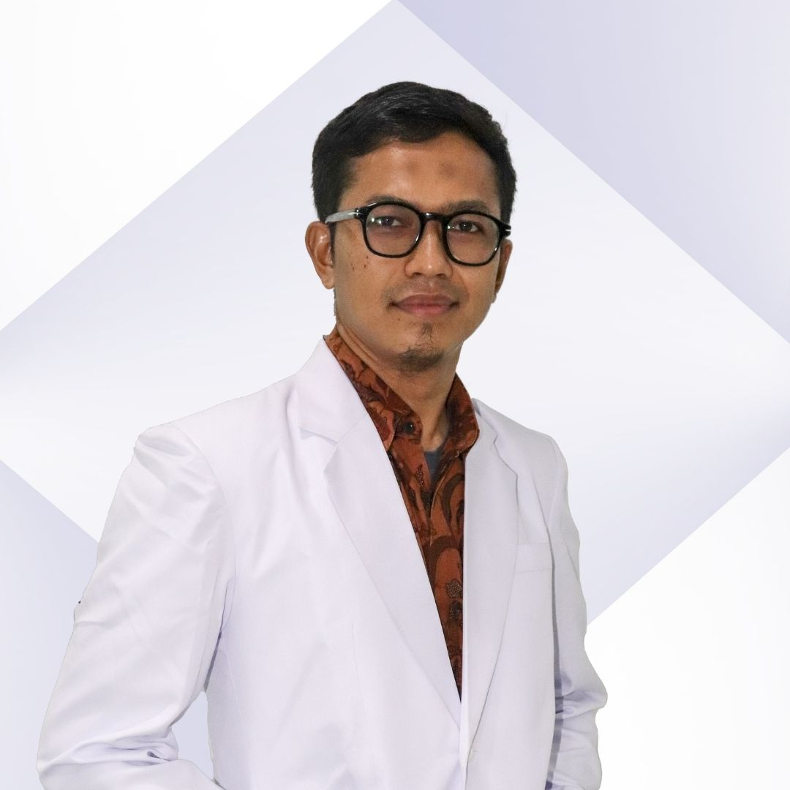

Dr. Ahmad Santoso
Spesialis Jantung
Pengalaman lebih dari 15 tahun dalam penanganan penyakit jantung dan kardiovaskular.
Berikut adalah dokter spesialis yang melayani pasien di RSUD Drs. H. Amri Tambunan. Klik "Detail" untuk informasi lebih lanjut atau jadwal praktik.

Pengalaman lebih dari 15 tahun dalam penanganan penyakit jantung dan kardiovaskular.

Ahli perawatan kesehatan anak dan remaja dengan pendekatan yang ramah.

Spesialis dalam operasi umum dan bedah darurat dengan teknologi terkini.
Fokus pada penanganan gangguan sistem saraf pusat dan perifer.